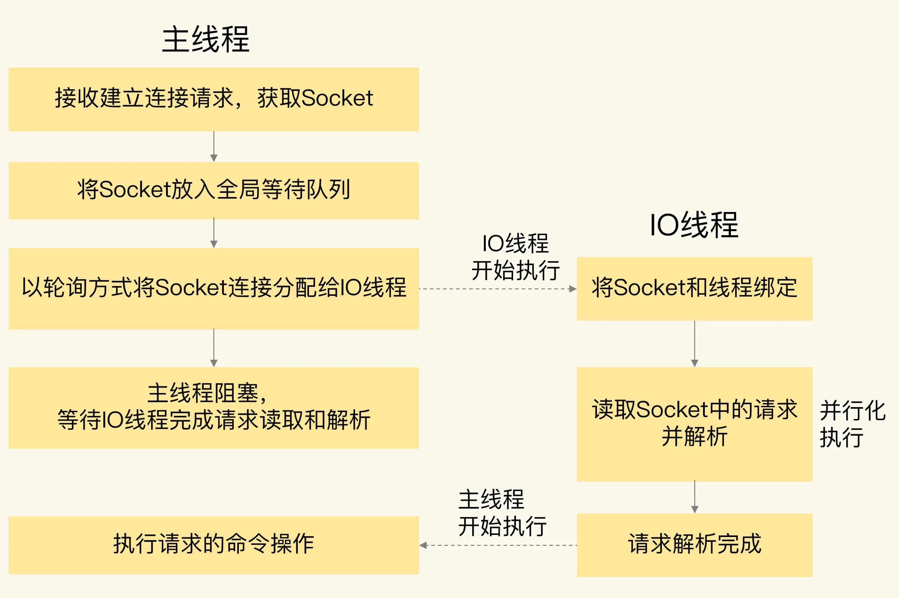
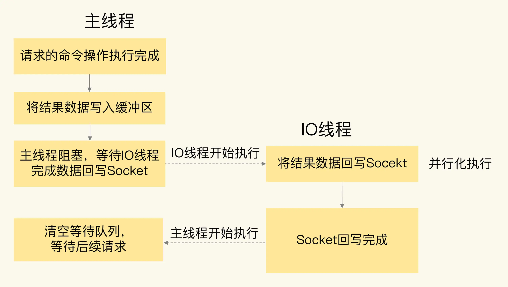
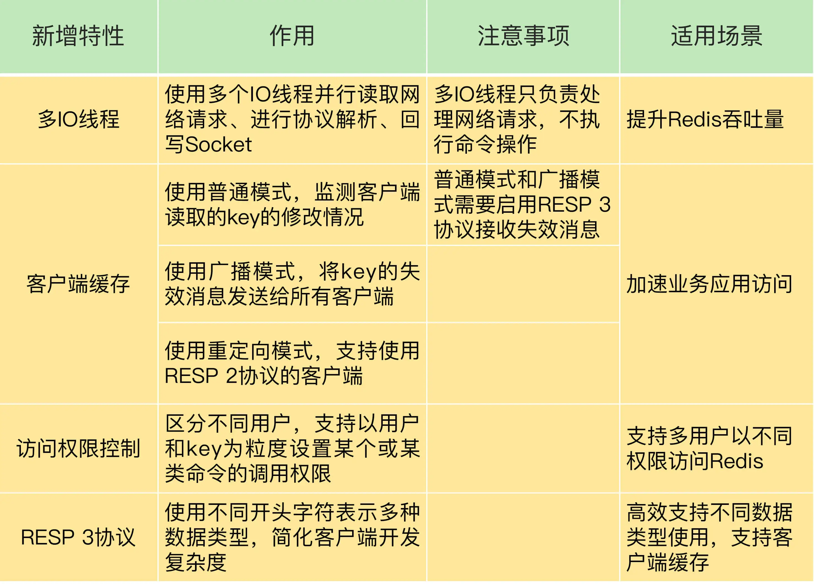

- 00 开篇词 这样学Redis，才能技高一筹.md
- 01 基本架构：一个键值数据库包含什么？.md
- 02 数据结构：快速的Redis有哪些慢操作？.md
- 03 高性能IO模型：为什么单线程Redis能那么快？.md
- 04 AOF日志：宕机了，Redis如何避免数据丢失？.md
- 05 内存快照：宕机后，Redis如何实现快速恢复？.md
- 06 数据同步：主从库如何实现数据一致？.md
- 07 哨兵机制：主库挂了，如何不间断服务？.md
- 08 哨兵集群：哨兵挂了，主从库还能切换吗？.md
- 09 切片集群：数据增多了，是该加内存还是加实例？.md
- 10 第1～9讲课后思考题答案及常见问题答疑.md
- 11 “万金油”的String，为什么不好用了？.md
- 12 有一亿个keys要统计，应该用哪种集合？.md
- 13 GEO是什么？还可以定义新的数据类型吗？.md
- 14 如何在Redis中保存时间序列数据？.md
- 15 消息队列的考验：Redis有哪些解决方案？.md
- 16 异步机制：如何避免单线程模型的阻塞？.md
- 17 为什么CPU结构也会影响Redis的性能？.md
- 18 波动的响应延迟：如何应对变慢的Redis？（上）.md
- 19 波动的响应延迟：如何应对变慢的Redis？（下）.md
- 20 删除数据后，为什么内存占用率还是很高？.md
- 21 缓冲区：一个可能引发“惨案”的地方.md
- 22 第11～21讲课后思考题答案及常见问题答疑.md
- 23 旁路缓存：Redis是如何工作的？.md
- 24 替换策略：缓存满了怎么办？.md
- 25 缓存异常（上）：如何解决缓存和数据库的数据不一致问题？.md
- 26 缓存异常（下）：如何解决缓存雪崩、击穿、穿透难题？.md
- 27 缓存被污染了，该怎么办？.md
- 28 Pika：如何基于SSD实现大容量Redis？.md
- 29 无锁的原子操作：Redis如何应对并发访问？.md
- 30 如何使用Redis实现分布式锁？.md
- 31 事务机制：Redis能实现ACID属性吗？.md
- 32 Redis主从同步与故障切换，有哪些坑？.md
- 33 脑裂：一次奇怪的数据丢失.md
- 34 第23~33讲课后思考题答案及常见问题答疑.md
- 35 Codis VS Redis Cluster：我该选择哪一个集群方案？.md
- 36 Redis支撑秒杀场景的关键技术和实践都有哪些？.md
- 37 数据分布优化：如何应对数据倾斜？.md
- 38 通信开销：限制Redis Cluster规模的关键因素.md
- 39 Redis 6.0的新特性：多线程、客户端缓存与安全.md
- 40 Redis的下一步：基于NVM内存的实践.md
- 41 第35～40讲课后思考题答案及常见问题答疑.md
- 加餐 01 经典的Redis学习资料有哪些？.md
- 加餐 02 用户Kaito：我是如何学习Redis的？.md
- 加餐 03 用户Kaito：我希望成为在压力中成长的人.md
- 加餐 04 Redis客户端如何与服务器端交换命令和数据？.md
- 加餐 05 Redis有哪些好用的运维工具？.md
- 加餐 06 Redis的使用规范小建议.md
- 加餐 07 从微博的Redis实践中，我们可以学到哪些经验？.md
- 结束语 从学习Redis到向Redis学习.md
39 Redis 6.0的新特性：多线程、客户端缓存与安全
Redis 官方在今年 5 月份正式推出了 6.0 版本，这个版本中有很多的新特性。所以，6.0 刚刚推出，就受到了业界的广泛关注。
所以，在课程的最后，我特意安排了这节课，想来和你聊聊 Redis 6.0 中的几个关键新特性，分别是面向网络处理的多 IO 线程、客户端缓存、细粒度的权限控制，以及 RESP 3 协议的使用。
其中，面向网络处理的多 IO 线程可以提高网络请求处理的速度，而客户端缓存可以让应用直接在客户端本地读取数据，这两个特性可以提升 Redis 的性能。除此之外，细粒度权限控制让 Redis 可以按照命令粒度控制不同用户的访问权限，加强了 Redis 的安全保护。RESP 3 协议则增强客户端的功能，可以让应用更加方便地使用 Redis 的不同数据类型。
只有详细掌握了这些特性的原理，你才能更好地判断是否使用 6.0 版本。如果你已经在使用 6.0 了，也可以看看怎么才能用得更好，少踩坑。
首先，我们来了解下 6.0 版本中新出的多线程特性。
从单线程处理网络请求到多线程处理
在 Redis 6.0 中，非常受关注的第一个新特性就是多线程。这是因为，Redis 一直被大家熟知的就是它的单线程架构，虽然有些命令操作可以用后台线程或子进程执行（比如数据删除、快照生成、AOF 重写），但是，从网络 IO 处理到实际的读写命令处理，都是由单个线程完成的。
随着网络硬件的性能提升，Redis 的性能瓶颈有时会出现在网络 IO 的处理上，也就是说，单个主线程处理网络请求的速度跟不上底层网络硬件的速度。
为了应对这个问题，一般有两种方法。
第一种方法是，用用户态网络协议栈（例如 DPDK）取代内核网络协议栈，让网络请求的处理不用在内核里执行，直接在用户态完成处理就行。
对于高性能的 Redis 来说，避免频繁让内核进行网络请求处理，可以很好地提升请求处理效率。但是，这个方法要求在 Redis 的整体架构中，添加对用户态网络协议栈的支持，需要修改 Redis 源码中和网络相关的部分（例如修改所有的网络收发请求函数），这会带来很多开发工作量。而且新增代码还可能引入新 Bug，导致系统不稳定。所以，Redis 6.0 中并没有采用这个方法。
第二种方法就是采用多个 IO 线程来处理网络请求，提高网络请求处理的并行度。Redis 6.0 就是采用的这种方法。
但是，Redis 的多 IO 线程只是用来处理网络请求的，对于读写命令，Redis 仍然使用单线程来处理。这是因为，Redis 处理请求时，网络处理经常是瓶颈，通过多个 IO 线程并行处理网络操作，可以提升实例的整体处理性能。而继续使用单线程执行命令操作，就不用为了保证 Lua 脚本、事务的原子性，额外开发多线程互斥机制了。这样一来，Redis 线程模型实现就简单了。
我们来看下，在 Redis 6.0 中，主线程和 IO 线程具体是怎么协作完成请求处理的。掌握了具体原理，你才能真正地会用多线程。为了方便你理解，我们可以把主线程和多 IO 线程的协作分成四个阶段。
阶段一：服务端和客户端建立 Socket 连接，并分配处理线程
首先，主线程负责接收建立连接请求。当有客户端请求和实例建立 Socket 连接时，主线程会创建和客户端的连接，并把 Socket 放入全局等待队列中。紧接着，主线程通过轮询方法把 Socket 连接分配给 IO 线程。
阶段二：IO 线程读取并解析请求
主线程一旦把 Socket 分配给 IO 线程，就会进入阻塞状态，等待 IO 线程完成客户端请求读取和解析。因为有多个 IO 线程在并行处理，所以，这个过程很快就可以完成。
阶段三：主线程执行请求操作
等到 IO 线程解析完请求，主线程还是会以单线程的方式执行这些命令操作。下面这张图显示了刚才介绍的这三个阶段，你可以看下，加深理解。

阶段四：IO 线程回写 Socket 和主线程清空全局队列
当主线程执行完请求操作后，会把需要返回的结果写入缓冲区，然后，主线程会阻塞等待 IO 线程把这些结果回写到 Socket 中，并返回给客户端。
和 IO 线程读取和解析请求一样，IO 线程回写 Socket 时，也是有多个线程在并发执行，所以回写 Socket 的速度也很快。等到 IO 线程回写 Socket 完毕，主线程会清空全局队列，等待客户端的后续请求。
我也画了一张图，展示了这个阶段主线程和 IO 线程的操作，你可以看下。

了解了 Redis 主线程和多线程的协作方式，我们该怎么启用多线程呢？在 Redis 6.0 中，多线程机制默认是关闭的，如果需要使用多线程功能，需要在 redis.conf 中完成两个设置。
- 设置 io-thread-do-reads 配置项为 yes，表示启用多线程。
io-threads-do-reads yes
- 设置线程个数。一般来说，线程个数要小于 Redis 实例所在机器的 CPU 核个数，例如，对于一个 8 核的机器来说，Redis 官方建议配置 6 个 IO 线程。
io-threads 6
如果你在实际应用中，发现 Redis 实例的 CPU 开销不大，吞吐量却没有提升，可以考虑使用 Redis 6.0 的多线程机制，加速网络处理，进而提升实例的吞吐量。
实现服务端协助的客户端缓存
和之前的版本相比，Redis 6.0 新增了一个重要的特性，就是实现了服务端协助的客户端缓存功能，也称为跟踪（Tracking）功能。有了这个功能，业务应用中的 Redis 客户端就可以把读取的数据缓存在业务应用本地了，应用就可以直接在本地快速读取数据了。
不过，当把数据缓存在客户端本地时，我们会面临一个问题：如果数据被修改了或是失效了，如何通知客户端对缓存的数据做失效处理？
6.0 实现的 Tracking 功能实现了两种模式，来解决这个问题。
第一种模式是普通模式。在这个模式下，实例会在服务端记录客户端读取过的 key，并监测 key 是否有修改。一旦 key 的值发生变化，服务端会给客户端发送 invalidate 消息，通知客户端缓存失效了。
在使用普通模式时，有一点你需要注意一下，服务端对于记录的 key 只会报告一次 invalidate 消息，也就是说，服务端在给客户端发送过一次 invalidate 消息后，如果 key 再被修改，此时，服务端就不会再次给客户端发送 invalidate 消息。
只有当客户端再次执行读命令时，服务端才会再次监测被读取的 key，并在 key 修改时发送 invalidate 消息。这样设计的考虑是节省有限的内存空间。毕竟，如果客户端不再访问这个 key 了，而服务端仍然记录 key 的修改情况，就会浪费内存资源。
我们可以通过执行下面的命令，打开或关闭普通模式下的 Tracking 功能。
CLIENT TRACKING ON|OFF
第二种模式是广播模式。在这个模式下，服务端会给客户端广播所有 key 的失效情况，不过，这样做了之后，如果 key 被频繁修改，服务端会发送大量的失效广播消息，这就会消耗大量的网络带宽资源。
所以，在实际应用时，我们会让客户端注册希望跟踪的 key 的前缀，当带有注册前缀的 key 被修改时，服务端会把失效消息广播给所有注册的客户端。和普通模式不同，在广播模式下，即使客户端还没有读取过 key，但只要它注册了要跟踪的 key，服务端都会把 key 失效消息通知给这个客户端。
我给你举个例子，带你看一下客户端如何使用广播模式接收 key 失效消息。当我们在客户端执行下面的命令后，如果服务端更新了 user:id:1003 这个 key，那么，客户端就会收到 invalidate 消息。
CLIENT TRACKING ON BCAST PREFIX user
这种监测带有前缀的 key 的广播模式，和我们对 key 的命名规范非常匹配。我们在实际应用时，会给同一业务下的 key 设置相同的业务名前缀，所以，我们就可以非常方便地使用广播模式。
不过，刚才介绍的普通模式和广播模式，需要客户端使用 RESP 3 协议，RESP 3 协议是 6.0 新启用的通信协议，一会儿我会给你具体介绍。
对于使用 RESP 2 协议的客户端来说，就需要使用另一种模式，也就是重定向模式（redirect）。在重定向模式下，想要获得失效消息通知的客户端，就需要执行订阅命令 SUBSCRIBE，专门订阅用于发送失效消息的频道 redis:invalidate。同时，再使用另外一个客户端，执行 CLIENT TRACKING 命令，设置服务端将失效消息转发给使用 RESP 2 协议的客户端。
我再给你举个例子，带你了解下如何让使用 RESP 2 协议的客户端也能接受失效消息。假设客户端 B 想要获取失效消息，但是客户端 B 只支持 RESP 2 协议，客户端 A 支持 RESP 3 协议。我们可以分别在客户端 B 和 A 上执行 SUBSCRIBE 和 CLIENT TRACKING，如下所示：
//客户端B执行，客户端B的ID号是303
SUBSCRIBE _redis_:invalidate
//客户端A执行
CLIENT TRACKING ON BCAST REDIRECT 303
这样设置以后，如果有键值对被修改了，客户端 B 就可以通过 redis:invalidate 频道，获得失效消息了。
好了，了解了 6.0 版本中的客户端缓存特性后，我们再来了解下第三个关键特性，也就是实例的访问权限控制列表功能（Access Control List，ACL），这个特性可以有效地提升 Redis 的使用安全性。
从简单的基于密码访问到细粒度的权限控制
在 Redis 6.0 版本之前，要想实现实例的安全访问，只能通过设置密码来控制，例如，客户端连接实例前需要输入密码。
此外，对于一些高风险的命令（例如 KEYS、FLUSHDB、FLUSHALL 等），在 Redis 6.0 之前，我们也只能通过 rename-command 来重新命名这些命令，避免客户端直接调用。
Redis 6.0 提供了更加细粒度的访问权限控制，这主要有两方面的体现。
首先，6.0 版本支持创建不同用户来使用 Redis。在 6.0 版本前，所有客户端可以使用同一个密码进行登录使用，但是没有用户的概念，而在 6.0 中，我们可以使用 ACL SETUSER 命令创建用户。例如，我们可以执行下面的命令，创建并启用一个用户 normaluser，把它的密码设置为“abc”：
ACL SETUSER normaluser on > abc
另外，6.0 版本还支持以用户为粒度设置命令操作的访问权限。我把具体操作列在了下表中，你可以看下，其中，加号（+）和减号（-）就分别表示给用户赋予或撤销命令的调用权限。

为了便于你理解，我给你举个例子。假设我们要设置用户 normaluser 只能调用 Hash 类型的命令操作，而不能调用 String 类型的命令操作，我们可以执行如下命令：
ACL SETUSER normaluser [email protected] [email protected]
除了设置某个命令或某类命令的访问控制权限，6.0 版本还支持以 key 为粒度设置访问权限。
具体的做法是使用波浪号“~”和 key 的前缀来表示控制访问的 key。例如，我们执行下面命令，就可以设置用户 normaluser 只能对以“user:”为前缀的 key 进行命令操作：
ACL SETUSER normaluser ~user:* [email protected]
好了，到这里，你了解了，Redis 6.0 可以设置不同用户来访问实例，而且可以基于用户和 key 的粒度，设置某个用户对某些 key 允许或禁止执行的命令操作。
这样一来，我们在有多用户的 Redis 应用场景下，就可以非常方便和灵活地为不同用户设置不同级别的命令操作权限了，这对于提供安全的 Redis 访问非常有帮助。
启用 RESP 3 协议
Redis 6.0 实现了 RESP 3 通信协议，而之前都是使用的 RESP 2。在 RESP 2 中，客户端和服务器端的通信内容都是以字节数组形式进行编码的，客户端需要根据操作的命令或是数据类型自行对传输的数据进行解码，增加了客户端开发复杂度。
而 RESP 3 直接支持多种数据类型的区分编码，包括空值、浮点数、布尔值、有序的字典集合、无序的集合等。
所谓区分编码，就是指直接通过不同的开头字符，区分不同的数据类型，这样一来，客户端就可以直接通过判断传递消息的开头字符，来实现数据转换操作了，提升了客户端的效率。除此之外，RESP 3 协议还可以支持客户端以普通模式和广播模式实现客户端缓存。
小结
这节课，我向你介绍了 Redis 6.0 的新特性，我把这些新特性总结在了一张表里，你可以再回顾巩固下。

最后，我也再给你一个小建议：因为 Redis 6.0 是刚刚推出的，新的功能特性还需要在实际应用中进行部署和验证，所以，如果你想试用 Redis 6.0，可以尝试先在非核心业务上使用 Redis 6.0，一方面可以验证新特性带来的性能或功能优势，另一方面，也可以避免因为新特性不稳定而导致核心业务受到影响。
每课一问
你觉得，Redis 6.0 的哪个或哪些新特性会对你有帮助呢？
欢迎在留言区写下你的思考和答案，我们一起交流讨论。如果你觉得今天的内容对你有所帮助，也欢迎你分享给你的朋友或同事。我们下节课见。
© 2019 - 2023 Liangliang Lee. Powered by Vert.x and hexo-theme-book.